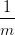
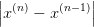
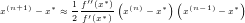

3.5 Método das Secantes
O método das secantes é uma variação do método de Newton. Dada uma função f(x), a ideia é aproximar sua derivada pela razão fundamental:
 |
Mais precisamente, o método de Newton é uma iteração de ponto fixo da forma:
 |
onde x(1) é uma aproximação inicial dada e α(x(n)) = 1∕f′(x(n)). Usando a aproximação da derivada acima, com x = x(n) e x 0 = x(n−1), temos:
 |
Isto nos motiva a introduzir a iteração do método das secantes dada por:
 |
Observe que para inicializarmos a iteração acima precisamos de duas aproximações iniciais, a saber, x(1) e x(2). Maneiras apropriadas de escolher estas aproximações podem ser inferidas da interpretação geométrica do método.
Solução. Da inspeção do gráfico das funções y = cos(x) e y = x, sabemos que esta equação possui uma raiz em torno de x = 0,8. Iniciamos o método com x0 = 0,7 e x1 = 0,8.
| x(n−1) | x(n) | m | x(n+1) |
 = = | 0,8 − = = |
||
| 0,7 | 0,8 | −1,6813548 | 0,7385654 |
| 0,8 | 0,7385654 | −1,6955107 | 0,7390784 |
| 0,7385654 | 0,7390784 | −1,6734174 | 0,7390851 |
| 0,7390784 | 0,7390851 | −1,6736095 | 0,7390851 |
3.5.1 Interpretação geométrica
Enquanto, o método de Newton está relacionado às retas tangentes ao gráfico da função objetivo f(x), o método das secantes, como o próprio nome indica, está relacionado às retas secantes.

Sejam f(x) e as aproximações x(1) e x(2) do zero x∗ desta função (veja Figura 3.6). A iteração do método das secantes fornece:
 |
De fato, x(3) é o ponto de interseção da reta secante ao gráfico de f(x) pelos pontos x(1) e x(2) com o eixo das abscissas. Com efeito, a equação desta reta secante é:
 |
Esta reta intercepta o eixo das abscissas no ponto x tal que y = 0, i.e.:
 |
3.5.2 Análise de convergência
Uma análise assintótica semelhante aquela feita para o método de Newton nos indica que, para uma função f(x) duas vezes diferenciável, as iterações do método da secante satisfazem:
 |
para aproximações iniciais suficientemente próximas de x∗, onde f(x∗) = 0. Além disso, veremos que:
 |
sob certas condições. Ou seja, o método das secantes tem taxa de convergência superlinear.
Teorema 3.5.1 (Método das secantes). Seja f ∈ C2([a,b]) uma função com x∗ ∈ (a,b) tal que f(x∗) = 0. Sejam, também:
![m := min |f ′(x)| > 0 e M := max |f ′′(x)| < ∞.
x∈[a,b] x∈ [a,b]](main436x.png) |
Além disso, seja ρ > 0 tal que:
![M
q := ---ρ < 1, K ρ(x∗) := {x ∈ ℝ; |x − x∗| ≤ ρ} ⊂ [a,b].
2m](main437x.png) |
Então, para aproximações iniciais x(1),x(2) ∈ K ρ(x∗), com x(1)≠x(2), temos que as iterações do método das secantes x(n) ∈ K ρ(x∗), n ≥ 1, e x(n) → x∗, quando n → ∞. Além disso, vale a seguinte estimativa de convergência a priori:
 |
onde {γn}n∈ℕ é a sequência de Fibonacci6 7 , bem como vale a estimativa a posteriori:
 |
Demonstração. Sejam n ∈ ℕ, n ≥ 2, e x(n),x(n−1) ∈ K ρ(x∗), tal que x(n)≠x(n−1), x(n)≠x∗ e x(n−1)≠x∗. Seja, também:
 |
Com isso, temos:
g(x(n),x(n−1)) − x∗ = x(n) − f(x(n)) − x∗ − x∗ | |||
=   . . | |||
 | (3.5) |
Agora, iremos estimar este último termo a direita. Para tanto, começamos observando que da expansão em polinômio de Taylor de ordem 0 da função f(x) com resto na forma integral, temos:
 | = −∫
01 f(x(n) + r(x(n−1) − x(n))) f(x(n) + r(x(n−1) − x(n))) | ||
| = ∫ 01f′(x(n) + r(x(n−1) − x(n)))dr |
 |
Logo, temos:
|
| (3.6) |
Agora, novamente temos:
 |
Então, retornando à Equação (3.6) e usando a assumida cota para a segunda derivada, obtemos:
|
|
Agora, retornando à Equação (3.5), obtemos:
 |
Portanto, concluímos que as iterações do método da secantes x(n) permanecem no conjunto Kρ(x∗), se começarem nele. Além disso, temos demonstrado que:
 |
Com isso, temos:
|
|
Como ρ1 ≤ q e ρ2 ≤ q, temos ρn ≤ qγn−1, n ≥ 1. Isto mostra a estimativa de convergência a priori:
 |
Além disso, como γn →∞ quando n →∞ e q < 1, temos que as iterações do método das secantes x(n) → x∗ quando n →∞.
Por fim, mostramos a estimativa de convergência a posteriori. Para tanto, da cota assumida para a primeira derivada e do Teorema do valor médio, temos, para n ≥ 3:
| |x(n) − x∗| | ≤ |f(x(n) − f(x∗)| |f(x(n) − f(x∗)| | ||
=   | |||
=  . . |
|
|
temos:
 |
Logo:
 |
Observamos que o último termo pode ser estimado como feito acima para o termo análogo na Inequação (3.5). Com isso, obtemos a estimativa desejada:
|
|
__
Proposição 3.5.1 (Sequência de Fibonacci). A sequência de Fibonacci {γn}n∈ℕ é assintótica a γn ∼ λ1n+1∕ e:
 |

Demonstração. A sequência de Fibonacci {γn}n∈ℕ é definida por γ0 = γ1 = 1 e γn+1 = γn + γn−1, n ≥ 1. Logo, satisfaz a seguinte equação de diferenças:
|
|
Tomando γn = λn, λ≠0 temos:
 |
Portanto, γn = c1λ1n + c 2λ2n. Como γ 0 = γ1 = 1, as constantes satisfazem:
 |
Ou seja, obtemos a seguinte forma explícita para os números de Fibonacci:
 |
Daí, segue imediatamente o enunciado. __